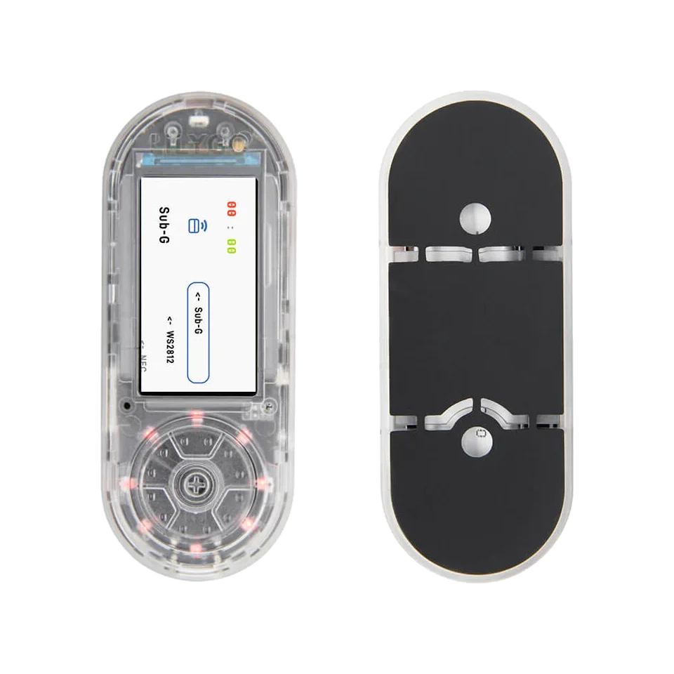

Sub-GHz / CC1101
LILYGO T-Embed CC1101 for handheld ESP32 radio testing
Use the LILYGO T-Embed S3 CC1101 when the ESP32-S3 board already includes the radio path needed for Sub-GHz lab workflows. It fits handheld Sub-GHz checks, CC1101 receive tests and radio-oriented ESP32-S3 workflows without wiring an external module first.

Board-specific guide for LILYGO T-Embed CC1101 firmware, integrated Sub-GHz workflows, wiring limits and ESP32-S3 debugging.
wiring references
T-Embed CC1101 pinout, radio and Qwiic photos
Four wiring references for T-Embed CC1101 pinout checks, Plus variant matching, radio layout and Qwiic access.
compatibility
T-Embed CC1101 board overview and CC1101 Plus variant
Use this page to choose between the CC1101 and CC1101 Plus variants before flashing ESP32 Bit Pirate.
practical tasks
T-Embed CC1101 supported workflows
T-Embed CC1101 is the integrated-board route for Sub-GHz work, with UART, I2C/Qwiic and IR available around the radio hardware.
Primary reason to choose this board. Use Sub-GHz protocol pages and CC1101 recipes; the Plus variant also includes NRF24 hardware.
Flash, verify and run CLI sessions from the browser or a serial terminal.
Use Qwiic access for compatible accessories, I2C checks and external modules with planned pin mapping.
IR and SD resources make remote-control and capture workflows natural in a handheld setup.
T-Embed CC1101 pin mapping and wiring notes
Keep CC1101, PN532, IR, SD, display and encoder pins reserved. Use Qwiic connectors for supported external wiring and avoid reassigning onboard radio pins unless you intentionally modify the firmware and hardware.
Always verify voltage and pin mapping before connecting a target. The ESP32-S3 side is not 5 V tolerant unless external level shifting or the Dock path is used correctly.
useful pages
T-Embed CC1101 useful next pages
Jump from T-Embed CC1101 to Sub-GHz, IR, serial, module and flashing resources.
Protocol modes
Useful recipes
Use the task guide for wiring, commands and troubleshooting.
Receive a Sub-GHz frameUse the task guide for wiring, commands and troubleshooting.
Record Sub-GHz signal to LittleFSUse the task guide for wiring, commands and troubleshooting.
Load Flipper .sub fileUse the task guide for wiring, commands and troubleshooting.
Wire CC1101 Sub-GHz moduleUse the task guide for wiring, commands and troubleshooting.
Tools and hardware
Open Web Serial for T-Embed CC1101 CLI sessions after flashing.
Web FlasherFlash the matching T-Embed CC1101 build from a compatible browser.
Hardware ecosystemCheck docks, adapters and wiring hardware that pair with T-Embed CC1101.
Modules and target chipsBrowse chips and breakout modules that make sense with T-Embed CC1101 wiring.
board-specific answers
T-Embed CC1101 FAQ
Quick T-Embed CC1101 answers about integrated radio support, Sub-GHz limits, GPIO tradeoffs and flashing.
Which firmware should I select for T-Embed CC1101?
Choose the T-Embed CC1101 or CC1101 Plus firmware, not the plain T-Embed firmware, when using the integrated CC1101 hardware.
Is this the best board for Sub-GHz work?
It is the most natural integrated ESP32 Bit Pirate route for CC1101-oriented Sub-GHz workflows.
Can I use it as a generic GPIO bench?
Only for limited tasks. The integrated radio, display and other onboard hardware reduce free GPIO compared with a DevKit.
Can ESP32 Bit Pirate replay arbitrary RF signals?
Use Sub-GHz features only on devices and lab signals you own or are authorized to test. The page should stay focused on learning, diagnostics and bench captures.
What is the bootloader tip?
Use the Web Flasher instructions for the selected T-Embed CC1101 variant, including the encoder/reset sequence when required.

source project
T-Embed CC1101 in the ESP32 Bit Pirate ecosystem
ESP32 Bit Pirate on T-Embed CC1101 centers on integrated Sub-GHz hardware, handheld radio checks, IR and connector-based bus work.